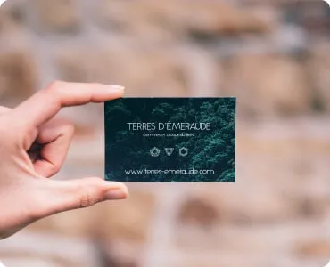
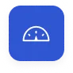
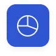
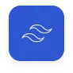
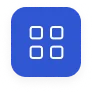

Контентні зображення - зображення, які і є контентом сайту
У більшості випадків це растрові зображення (фотографії)
(JPG/PNG -> WEBP)
Усі контентні зображення виводяться тегом IMG
Jpeg to Webp


Png to Webp



